...
Take the Drupal Themer survey!
https://drupaltheming2014.webform.com/form/11517
T W I G !
Drupal 8 theming
Drupalcamp Frankfurth 2014
Offended ?
i'm so Sörry
Morten
Birch
heide-jørgensen
birch
bitch
mortendk
http://morten.dk
http://morten.dk
dk
div killer
<div class="killer">
me:
@mortendk

geek Röyale - copenhagens finest themes
So What is
Actually wrong
with
Drupal Theming ?
From the frontend perspective ?
sorry devs you can moan later2 things:
Divitis
Rich Markup (tm)
css overload
css overload
5 classes for each field
wait im just a piece of data
Drupals Frontend Problems:
1. the markup
2 .the css
why
Who's to Blame
Its the :
Developers!
No Its the :
Themers!
One markup
to rule! em all
Nobody told us
what to do!
Pretty please...
TWIG
Anger driven development ;)
Frontend United!
Amsterdam march 2012
San Francisco
PHP template
TWIG
a little bit of french elegance
Lets make a plan
Drop the what if's
but but but but but what if...
Dont Dumb it down
Themers are not that Dumb
the Frontend experience
- Start from nothing
- Dont solve all problems
- Provide tools
- Visibility
- consistency
- dont dumb it down
New awesome [sjeit]
or 666 reasons why Drupal8 is better than Drupal7
HTML 5
HTML5
Drupal 8 DON'T support
ie 6
ie 7
ie 7
Pretty markup
<div id="bad-practice">...</div>
75% less ID's *
Drupal CSS
Drupal 7
<body class="html one-sidebar sidebar-first not-front logged-in
page-node page-node- page-node-4 node-type-fieldtest ">
Drupal8
<body class=" how-about-we_figure_that-out ">
CSS Stucture
Build on SMACSS & BEM
CSS architecture (1887918)
.notification {
/* general styles for all notifications */
}
.notification--info {
/* blue color adjustments */
}
css filenames
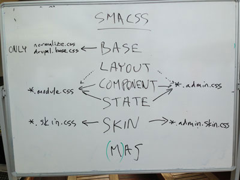Approved
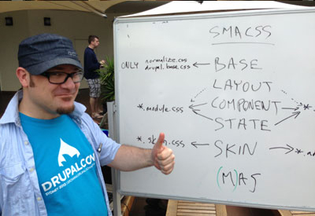B.A.T. Namescheme
CSS file organization (nid: 1887922)D8 File Structure
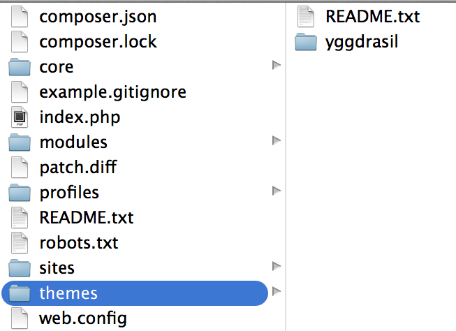Drupal 8 core
/themes
provide visibility
themes now lives in "/themes"
or "sites/ *** /themes"
D8 File structure modules
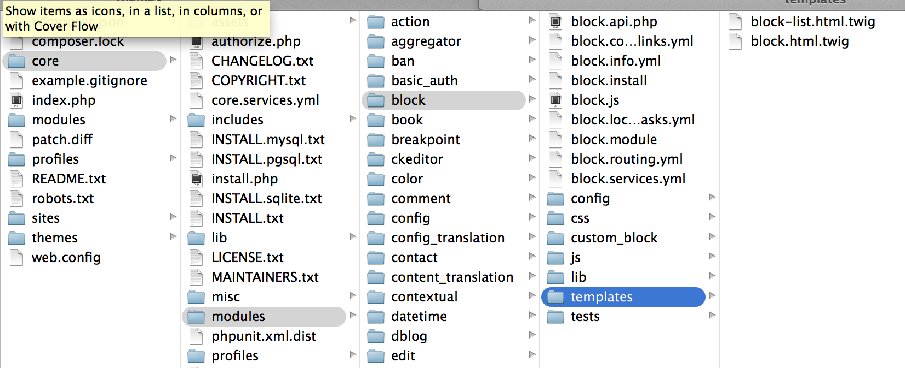modulename/templates/*.html.twig
DEBUG!
where's that template ?
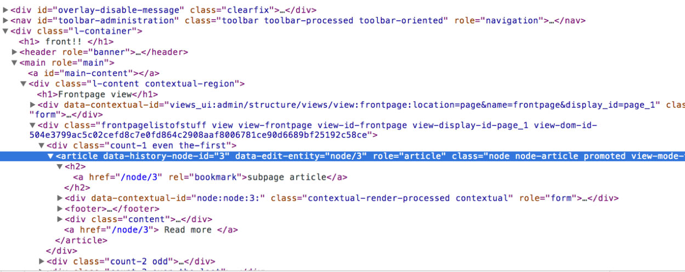DEBUG!
$settings['twig_debug'] = TRUE;
$settings['twig_debug'] = TRUE;
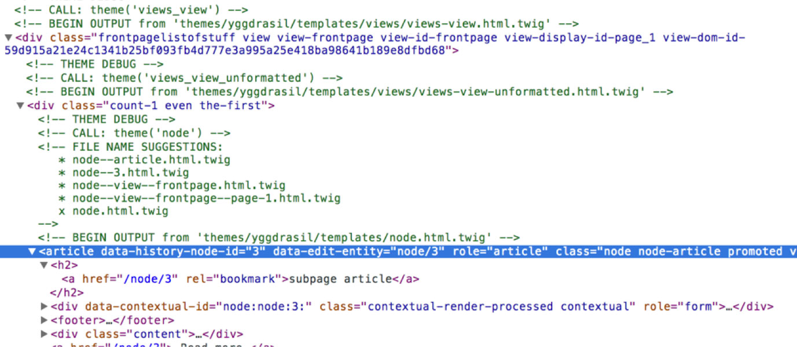Drupal7 Mothership (tm)
MothershipR I P
Theme functions
Compiled
the twig templates are compiled
.scss -> .css
(not to themers: its the same thingie that the compile thingie do)
SQL in a theme ?
Who does that ?
Bad Developers
Themes are markup & css!
SELECT * FROM users
....
Branding & logo
HARD coded
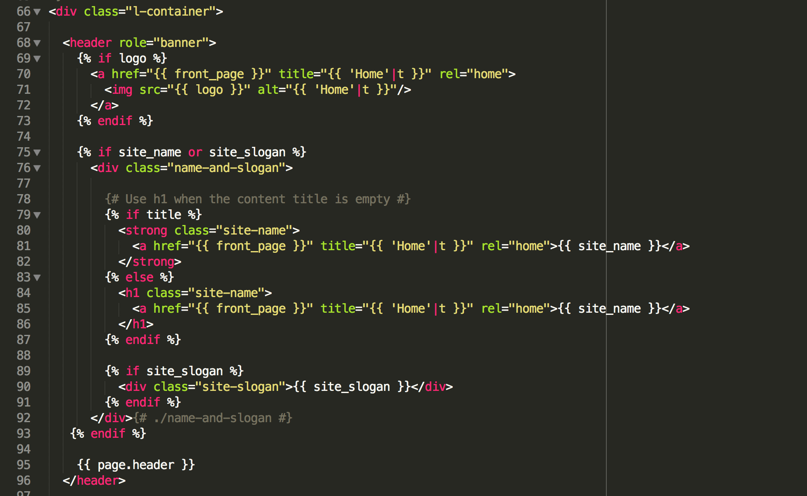Branding & logo
is now a block
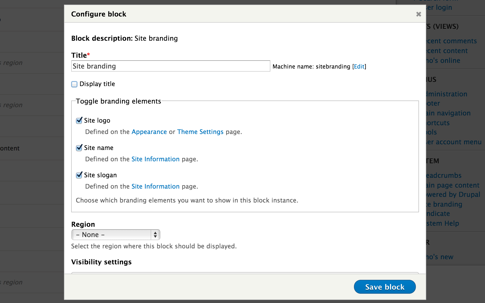Twig Basic
its dead easy
comments & vars
/*
comment
*/
<?php print $foo ; ?>
{# comment #}
{{ foo }}
Variables
/*
so php template
Now where is that value again
*/
<?php print $foo['bar']['UND']->baz['what']->thefuck['seriously'] ?>
{# hello twig can you find valdo ? #}
{{ foo.bar.baz.done.with.this.shit }}
{{ foo['bar'] }}
{% functions %}
If / else
<?php if($foo): ?>
<?php print $var; ?>
<?php endif; ?>
{% if foo %}
{{ var }}
{% endif %}
loops
Team Awesome
{% for user in users %}
- {{ user.username}}
{% endfor %}
Team Awesome
- cottset
- joel
- jen
- mark carver
- mortendk
loop stuff
{{ loop.length }}
{{ loop.first }}
{{ loop.last }}
{{ loop.index }}
{% if loop.first %}
...
{% elseif loop.index == 2 %}
...
{% elseif loop.last %}
...
{% endif %}
Set
{% set foo %}
count-{{ loop.index }}
{% endset %}
{{ foo }},
count-1,count-2, count-3,
filter
{% filter upper %}
uppercase for the win
{% endfilter %}
UPPERCASE FOR THE WIN
|filter
{{ foo|dostufftofoo }}
{# name = morten #}
{{ name|striptags|title }}
Morten
Drupal8 Theme
Yggdrasil
github.com/mortendk/yggdrasiltheme structure
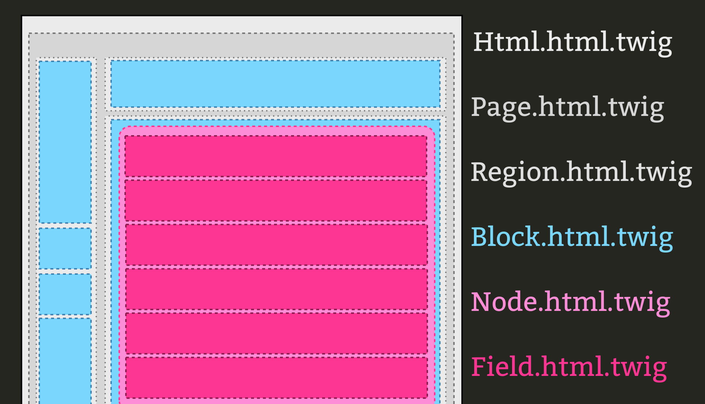
name: drupal7themename
description = This is my epic D7 theme
screenshot = screenshot.png
engine = phptemplate
core = 7.x
php = 5.2
regions[header] = Header
regions[logo] = Logo
regions[menu] = Menu
regions[messages] = Messages
regions[content] = Content
regions[footer] = Footer
stylesheets[all][] = css/style.css
#FOAD fix
stylesheets[all][] = donteverloadmeagain.css
drupal7.info
name: drupal8themename
type: theme
description: This is my epic D8 theme
package: Core
core: 8.x
stylesheets:
all:
- css/layout.css
print:
- css/print.css
stylesheets-remove:
- system.theme.css
- user.icons.css
- stuffidontwant.css
regions:
header: Header
logo: Logo
menu: Menu
messages: Messages
content: Content
footer: Footer
# engine: phptemplate
drupal8.info
if you
phptemplate
# engine: phptemplate
FOAD
its now build in
stylesheets[all][] = css/style.css
#FOAD fix
;stylesheets[all][] = donteverloadmeagain.css
stylesheets[all][] = system.theme.css
stylesheets[all][] = user.icons.css
stylesheets[all][] = stuffidontwant.css
stylesheets-remove:
- system.theme.css
- user.icons.css
- stuffidontwant.css
Regions on Page
Drupal 7
<?php if ($page['footer']): ?>
<?php endid ?>
Drupal 8
{% if page.footer %}
{% endif %}
Blocks
<div{{ attributes }}>
{{ title_prefix }}
{% if label %}
<h2{{ title_attributes }}>{{ label }}</h2>
{% endif %}
{{ title_suffix }}
<div{{ content_attributes }}>
{{ content }}
</div>
</div>
<nav class="{{ attributes.class }}" role="{{ attributes.role}}">
{{ title_prefix }}
{% if label %}
<h2{{ title_attributes }}>{{ label }}</h2>
{% endif %}
{{ title_suffix }}
{{ content }}
</nav>
block.html.twig
theme hook suggestions
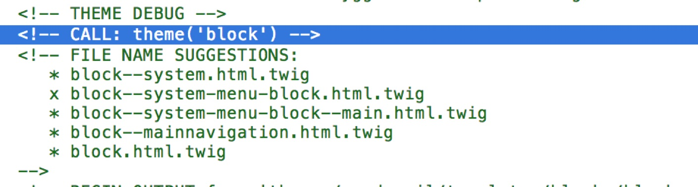{{ whatever|replace }}
...
{{ attributes.class |replace( {'block': '' }) }}
block.html.
<nav class="{{ attributes.class }}" role="{{ attributes.role}}">
{{ title_prefix }}
{% if label %}
<h2{{ title_attributes }}>{{ label }}</h2>
{% endif %}
{{ title_suffix }}
{{ content }}
</nav>
block--system-menu-block.html.twig
Done
{{attributes}}
...
...
....
add .foo
foo
.twig
foo
drupal
Terms
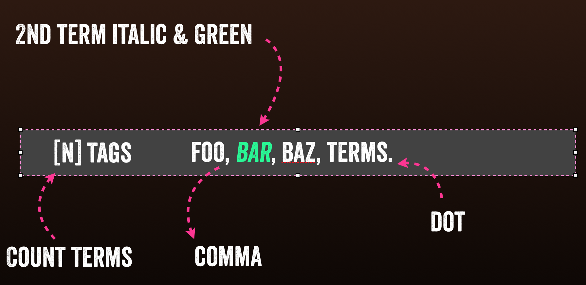
the designer is an idiot
and they wanna support ie "something"
the Markup
<div class="tags">
3 tags:
foo,
bar,
baz.
</div>
the markup
.thedesignerisanidiot{
color: green;
font-style:italic;
}
node
....
{{ content.field_tags}}
{{ content|without('field_tags') }}
node.html.twig
{{ content|without(field-name) }}
{{ fieldname }}
{# Start the loop #}
{% for delta, item in items %}
{# create a class var #}
{% set class %}
{# odd even #}
{{- cycle(["even", "odd"], delta) }}
{# count-x #}
count-{{ loop.index -}}"
{% endset %}
{{item}},
{# end the loop #}
{% endfor %}
field--field-tags.html.twig
Odin,
Thor,
Freya,
drupal8
tags vs tag
{# first loop #}
{% if loop.first %}
{# set tags / tag #}
{% if loop.length > 1 %}
{{ loop.length }}
tags:
{% else %}
tag:
{% endif %}
...
field--field-tags.html.twig
3 tags:
add a class on 2 tag
{% if loop.first %}
...
{% elseif loop.index == 2 %}
{{item}},
...
{# end the loop #}
{% endfor %}
field--field-tags.html.twig
Odin
Thor
Freya
{% if loop.first %}
{% if loop.length > 1 %}
{{ loop.length }} tags:
{% else %}
tag:
{% endif %}
{{item}},
{% elseif loop.index == 2 %}
{{item}},
{% elseif loop.last %}
{{item}}.
{% else %}
{{item}},
{% endif %}
field--field-tags.html.twig
3 tags:
Odin,
Thor,
Freya.
TWIG BLOCK
{% block foobar %}
{# i can be something else #}
{% endblock %}
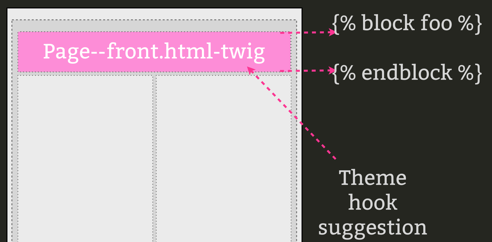
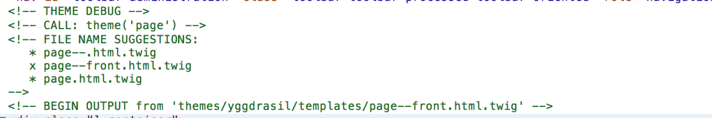
{% block headerblock %}
change me if im on the frontpage
{% endblock %}
page.twig.html
{% extends "themes/yggdrasil/templates/page.html.twig" %}
{% block headerblock %}
Im on the frontpage!
{% endblock %}
page--front.html.twig
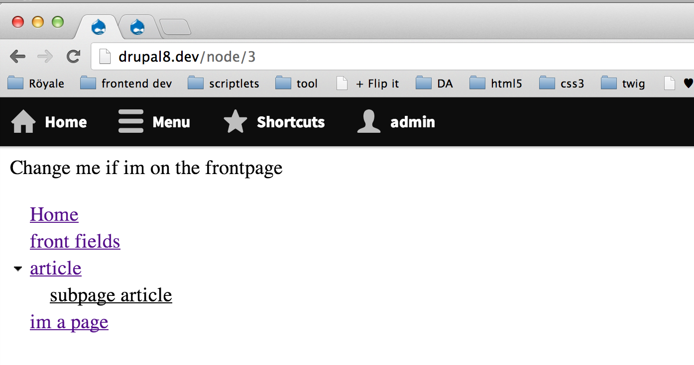
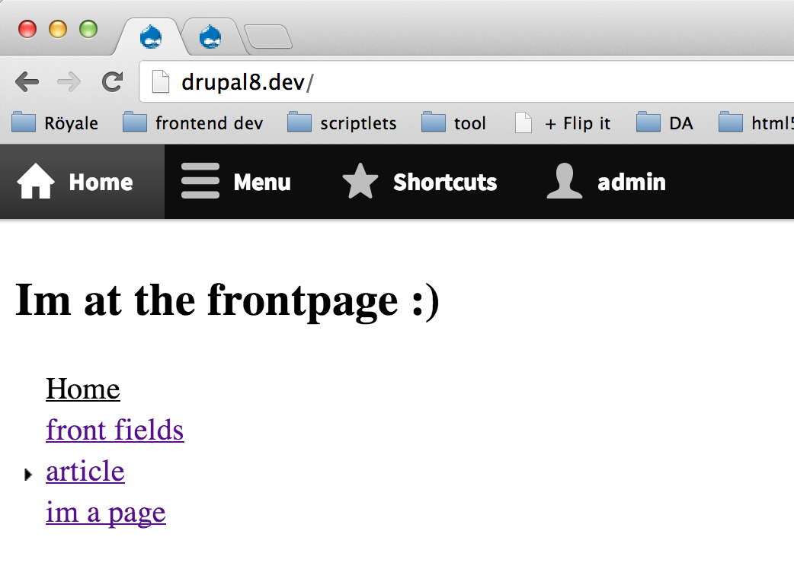
translate
{{ 'last checked: @time ago'| t({'@time':time}) }}
{% trans %}
Hi im a swede and i speak funny: Höidy hoeeeydi
{% endtrans %}
Höidy hoeeeydi
Responsive ?
HEROs wanted
{{ TWIG }}
twig team
cottser
joel
jen lampton
mortendk
ruben
mark carver
fabianx
marc Drummond
YOU :)
#Drupaltwig
drupaltwig.org
Hangout
Wed. at 9pm
Thurs. at 1am
IRC
IRC: #drupal-twig
Slack app
https://drupaltwig.slack.com
Codesprint Tomorrow ?
12:00
Field
Questions?
@mortendk
#drupaltwig
drupaltwig.org
resourses
TWIG documentation
drupaltwig.org
http://mortendk.github.io/drupal8-twig-chicago-2014